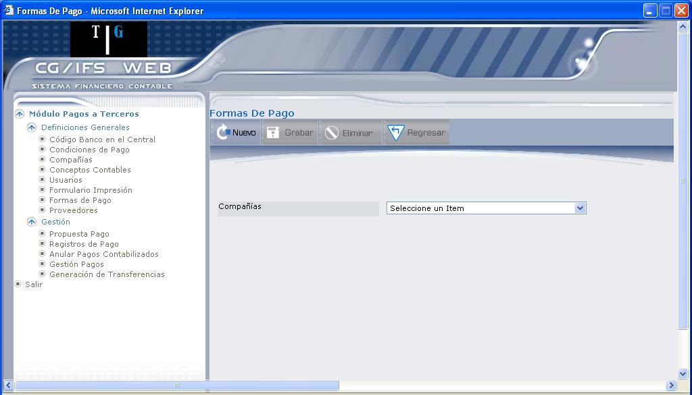
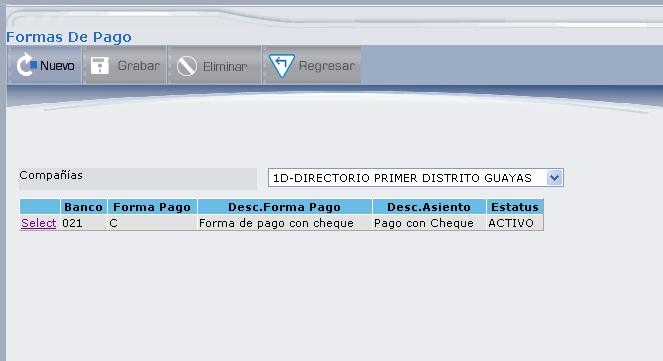
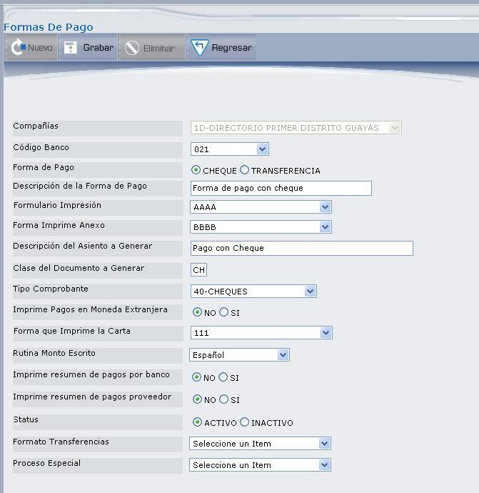
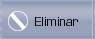

Formas de Pago
Esta opción permite definir las formas de pago que se van a usar en el módulo. Toda forma de pago emite un listado cuyo texto lo indica el usuario. Así por ejemplo, para transferencia se puede imprimir una orden al banco que tenga la información necesaria. La forma de pago más usual son los cheques. Para cada banco hay que definir las formas de pago a usar.
Al seleccionar esta opción, se despliega la pantalla que muestra la Figura 3.35.

Figura 3. Formas de Pago.
Compañía:
Seleccione la compañía en la que se va a consultar o definir las formas de pago. Al seleccionar una, se presenta la pantalla que muestra la Figura 3.36.

Figura 3. Seleccionar Forma de Pago.
En esta pantalla pueden verse las formas de pago definidas en una compañía y sus principales campos. El contenido de las columnas que aparecen en la pantalla es el siguiente: Código de banco (que se definió en la Tabla de Conceptos Contables), Código de Forma de Pago, Descripción de la Forma de Pago, Descripción del Asiento (aparecerá en el asiento contable cuando se contabilicen los pagos) y Estado del registro.
Si no existe ninguna forma de pago se despliega el mensaje: “No existen registros”.
Desde esta pantalla el usuario podrá realizar las siguientes acciones:
- Actualizar la(s) forma(s) de pago en estado ACTIVO, mediante el vínculo Select. En la actualización no puede actualizar el código de banco, ni la forma de pago. Cada campo que se presenta en la pantalla de actualización se describe en la pantalla de la Figura 3.37, al definir una nueva forma de pago.
- Ingresar una nueva forma de pago mediante el botón NUEVO.

Figura 3. Detalle de Forma de Pago.
Compañía:
Despliega el código y nombre de la compañía que haya seleccionado.
Código Banco:
Se selecciona el código del banco. Es el mismo que se coloca a las cuentas de banco en la tabla de conceptos contables.
Forma de Pago:
Marque el casillero de selección correspondiente a la forma de pago dentro de cada banco, ésta puede ser Cheque o Transferencia.
Descripción de la Forma de Pago:
Se digita una breve descripción que se utiliza para recordar en qué consiste esta forma de pago.
Formulario Impresión:
Cada forma de pago se imprime en un tipo de papel diferente. Este nombre hay que acordarlo con el operador del sistema.
Forma Imprime Anexo:
Si los documentos que se cancelan a un proveedor ocupan más de una página, hay que continuar imprimiendo en la siguiente página. Esto trae como consecuencia que se pierda el cheque de esa página. Para evitar esto se ha creado el formulario anexo. En este formulario se imprimen las páginas de continuación cuando la cantidad de documentos no caben en una sola página. El nombre de este formulario debe ser diferente del formulario de impresión principal.
Descripción del Asiento a Generar:
Aquí se debe colocar la descripción que desea que aparezca en los asientos generados con esta forma de pago para las cuentas de banco. Si desea que algún dato variable aparezca en la descripción puede usar las variables de sustitución. Algunas de las variables que se pueden colocar aquí son: <VRNDPV> Nombre Proveedor, <VRCHKE> Número de Cheque, etc. El detalle de estas variables se puede observar en la LISTA DE VARIABLES que se describe en la tabla 3.1 de este manual, en el punto 3.3.
Clase del Documento a Generar:
Despliega el código de la Clase del Documento que se va a generar.
Tipo Comprobante:
Seleccione el tipo de comprobante.
Imprime Pagos en Moneda Extranjera:
Si usted tiene cuentas en moneda extranjera, puede imprimir los cheques directamente en esta moneda. Por ejemplo, hay compañías que tienen cuentas en dólares, para hacer los pagos a proveedores del exterior pueden imprimir directamente los cheques en dólares u ordenar las transferencias en dólares. Si desea que una determinada forma de pago imprima los pagos en moneda extranjera seleccione “SI”, de lo contrario seleccione “NO”.
Forma que Imprime la Carta:
Seleccione el formato en el que se imprimirán las cartas.
Rutina Monto Escrito:
Se selecciona el idioma en que se imprimirán las cantidades.
Imprime resumen de pagos por banco:
Si desea que al momento de imprimir los pagos se imprima también un resumen de los pagos hechos seleccione “SI” en este campo, caso contrario seleccione “NO”.
Imprime resumen de pagos proveedor:
Sí desea que al momento de imprimir los pagos se imprima también una relación de lo que cada pago cancela, seleccione “SI”, caso contrario seleccione “NO”.
Status:
Define el estado de la forma de pago “Activo” o “Inactivo”.
Formato Transferencias:
Se selecciona el formato de transferencia.
Proceso Especial:
Se define algún proceso adicional, en donde además del cheque normal, se puede realizar alguna transferencia o información de archivos al banco que seleccione en este campo.
A continuación presione el botón GRABAR. Cuando se consulta una forma de pago, en la parte inferior de los datos se despliega la siguiente información:
Creación: Usuario que registró la nueva forma de pago, Nombre de la Terminal, fecha y hora de creación.
Modificación: Usuario que realizó la última modificación, Nombre de la Terminal, Fecha y hora de modificación.
BOTONES

Created with the Personal Edition of HelpNDoc: News and information about help authoring tools and software